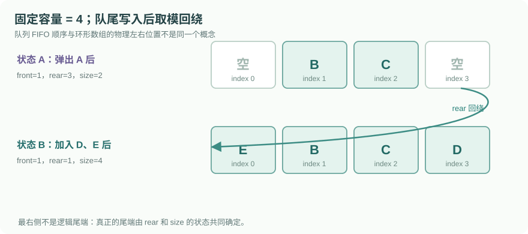
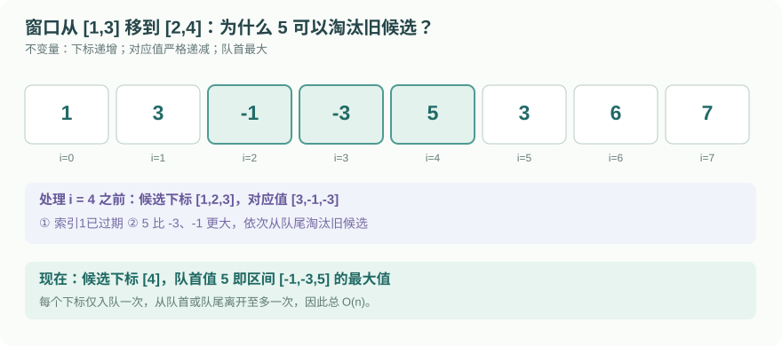
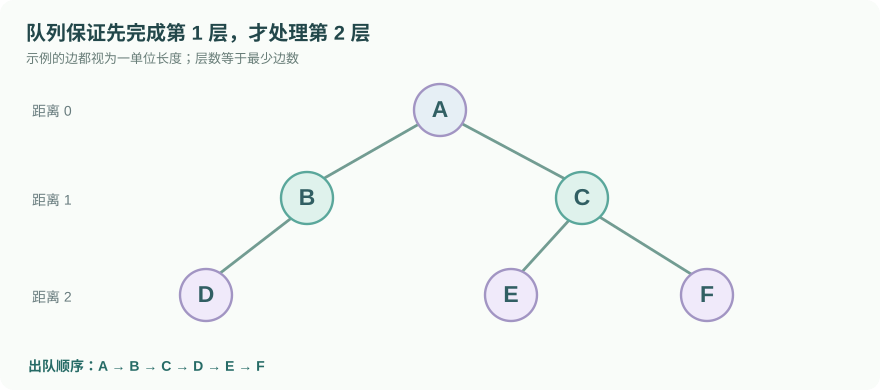

队列：从 FIFO 到循环缓冲与层序搜索
为什么用 Python list 的 pop(0) 性能会下降？如何用取模解决环形缓冲区的边界？为什么 BFS 的队列可以按层给出最少边数路径？
队列承诺的是顺序：最先进入者最先离开
任务排队系统要求先到的工作先得到处理。队列提供入队 enqueue 与出队 dequeue 两类操作，其规则是 FIFO（First In, First Out）。它和上一章的 LIFO 栈有相同的“线性存储”外观，却表达完全不同的调度顺序。
Python 的 list.append 在末尾追加通常均摊 O(1)，但 list.pop(0) 移除首项后要移动其余引用槽位，因而为 O(n)。collections.deque 提供两端追加和弹出的高效接口，适合普通 FIFO 队列。
from collections import deque
q = deque()
q.append("request-A")
q.append("request-B")
assert q.popleft() == "request-A"
q.append("request-C")
assert list(q) == ["request-B", "request-C"]环形队列：把已经释放的位置重新利用
如果一个有界缓冲区只允许最多 capacity 个元素，简单地让尾指针一直向右移动最终会越界；搬移全部已有元素又太昂贵。环形数组用模运算把下标重新映射回开头：入队写入 data[rear]，再令 rear = (rear+1) % capacity；出队则从 front 读取并令 front = (front+1) % capacity。

class CircularQueue:
def __init__(self, capacity):
if capacity <= 0:
raise ValueError("capacity must be positive")
self._a = [None] * capacity
self._front = 0
self._rear = 0
self._size = 0
def enqueue(self, value):
if self._size == len(self._a):
raise OverflowError("queue is full")
self._a[self._rear] = value
self._rear = (self._rear + 1) % len(self._a)
self._size += 1
def dequeue(self):
if self._size == 0:
raise IndexError("queue is empty")
value = self._a[self._front]
self._a[self._front] = None
self._front = (self._front + 1) % len(self._a)
self._size -= 1
return value
q = CircularQueue(2)
q.enqueue("A")
q.enqueue("B")
assert q.dequeue() == "A"
q.enqueue("C")
assert q.dequeue() == "B"
assert q.dequeue() == "C"不变量：0 ≤ size ≤ capacity，队首指向最老的有效元素，队尾指向下次可写的位置。若只比较 front == rear，空队列和满队列就会混淆；本实现显式保存 size，没有浪费一个槽位的要求。
沿环形缓冲推进事件
双端队列：两端操作快，不代表任意位置访问快
Deque 是 double-ended queue 的缩写。它既支持 append、popleft，也支持 appendleft、pop。Python collections.deque 的这四种端点操作是常数时间或近似常数时间行为；但中间位置的随机访问不等同于数组的 O(1)。
| 容器 | 尾部添加 | 头部移除 | 中间下标访问 |
|---|---|---|---|
| Python list | 均摊 O(1) | O(n) | O(1) |
| collections.deque | O(1) 类端点操作 | O(1) 类端点操作 | 中间可退化 O(n) |
| 固定容量环形数组 | O(1)（未满） | O(1)（非空） | 需定义逻辑索引到物理索引的映射 |
在 Python 中，deque(maxlen=k) 是有界结构，但当满时 append 会自动丢弃另一端的旧元素；它不是上面的“满时抛 OverflowError”的严格队列语义。选择 API 前务必先定义满载行为。
单调队列：滑动窗口最大值为何是线性的？
设数组 [1,3,-1,-3,5,3,6,7]，窗口宽度 k=3。每次窗口右移，我们需要最大值。暴力每次扫描 k 个元素会花费 O(nk)。可以让双端队列只保存可能成为未来窗口最大值的索引，并让索引对应的值从队首到队尾严格递减。
当新值到来时，队尾所有不大于新值的候选都不会再成为更优答案，因为新值不仅更大或相等，而且更晚离开窗口，所以可以从尾部移除；同时把左边已过期的索引从队首移除。最大值始终是队首对应值。

from collections import deque
def sliding_window_max(nums, k):
if not 1 <= k <= len(nums):
raise ValueError("require 1 <= k <= len(nums)")
candidates = deque() # 下标严格递增，值严格递减
result = []
for i, value in enumerate(nums):
while candidates and candidates[0] <= i - k:
candidates.popleft()
while candidates and nums[candidates[-1]] <= value:
candidates.pop()
candidates.append(i)
if i >= k - 1:
result.append(nums[candidates[0]])
return result
assert sliding_window_max([1,3,-1,-3,5,3,6,7], 3) == [3,3,5,5,6,7]每个索引最多入队一次、从头或尾出队一次，总时间 O(n)，队列占 O(k) 空间。相等值从尾部移除的条件是 <=；如果只移除严格小值，算法同样可正确，但队列保存更多相同值，且“严格递减”的不变量应相应改成“不增”。
广度优先搜索：FIFO 导致按距离分层
树或图的 BFS（Breadth-First Search）把最先发现的节点先展开。设无权图中的 A 与 B、C 相邻，B 与 D 相邻，C 与 E、F 相邻；从 A 出发，首先访问距离为 0 的 A，再访问距离为 1 的 B、C，最后访问距离为 2 的 D、E、F。队列确保下一层不会抢在当前层前面。

from collections import deque
def bfs_distance(adj, start):
dist = {start: 0}
queue = deque([start])
while queue:
u = queue.popleft()
for v in adj.get(u, ()):
if v not in dist:
dist[v] = dist[u] + 1
queue.append(v)
return dist
graph = {"A": ["B", "C"], "B": ["D"],
"C": ["E", "F"], "D": [], "E": [], "F": []}
assert bfs_distance(graph, "A") == {
"A": 0, "B": 1, "C": 1, "D": 2, "E": 2, "F": 2}把节点标记为“已发现”应发生在入队时，不是出队后：若图有多条边通向同一节点，晚标记会造成重复入队。对无权图或等权边的图，BFS 能得到最少边数距离；如果边权不同，通常不能直接把 BFS 视为最短路径算法，应考虑 Dijkstra 等方法。
正确性与工程选择：何时使用哪一种队列？
任务队列可以要求 FIFO，但“FIFO”并不自动保证严格公平：多消费者并发、优先级、中断和重试都会影响真实调度。环形队列适合已知容量且希望避免频繁分配的场景，需要明确满载策略；单调双端队列适合窗口极值，不意味着任何队列都必须有序。
自检建议包含：空队列出队、满队列入队、首尾指针回绕、单元素容量、重复元素滑动最大值、图中重边和环。下一章将从顺序维护转向按键定位：哈希表并不提供 FIFO，但可以与队列配合完成高效的任务状态查询。
带走三个判断准则
- FIFO 是入队出队的顺序契约；Python list.pop(0) 不是高效的常规队列实现。
- 环形数组用取模回收槽位，必须清楚地区分空、满和首尾指针的语义。
- 单调队列的 O(n) 来自候选各只进入与离开一次；BFS 最少边数保证只针对无权/等权距离模型。
继续学习与校验资料
- Python collections.deque — 双端操作、maxlen 和访问特性
- MIT 6.006 — 图的 BFS 和基本复杂度分析
- 下一章：哈希表 — 从排队顺序转向按键访问